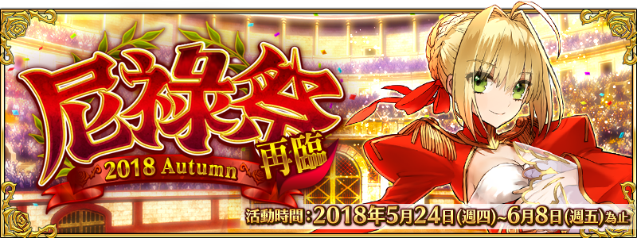

本頁面資訊僅供參考，實際情況請以遊戲內資料為準。
由於直接使用官方翻譯，可能會與其他站內翻譯相異，敬請見諒。
其他公告內容請參照日版當時公告翻譯。
本活動為最後有掉落機率資料的活動，往後不再提供。
| PICK UP對象 | ||
|---|---|---|
|
| ||
| 活動限定效果 | ||
 |
| 尼祿獎章〔金〕的掉落獲得數增加1個(最大解放:2個) |
|
| 尼祿獎章〔銀〕的掉落獲得數增加1個(最大解放:2個) |
| 尼祿獎章〔銅〕的掉落獲得數增加1個(最大解放:2個) | |
 | 自身在『尼祿祭再臨～2016 Autumn～』的攻擊威力提升100%(最大解放:200%) | |
| 深紅花瓣的掉落獲得數增加1個(最大解放:2個) | |
- 預選賽
-
預選 初級 黑鬍子危機一發 消耗AP 推薦Lv. 初次報酬 開放條件 10 15 5/24 13:00~5/27 23:59
通過：開幕！ 第2屆尼祿祭！∞ 職階傾向 QP Exp 絆 

1,900 550 165 Wave 1 1  Lv.10 暈船的船員 HP3,910
Lv.10 暈船的船員 HP3,9102 Lv.10 暈船的船員 HP3,9103 Lv.10 暈船的船員 HP3,910Wave 2 1 Lv.15 暈船的船員 HP5,4402 Lv.15 暈船的船員 HP5,4403 Lv.15 暈船的船員 HP5,440Wave 3 1  Lv.32 冒險百連發 HP20,197
Lv.32 冒險百連發 HP20,1972  Lv.25 兔耳舞女 HP13,571
Lv.25 兔耳舞女 HP13,571掉落總合機率
(可能掉落箱數)224.8%(6) 10.2%(6) 3%(2) 0.2%(1) 518%(10) 92%(10) 202%(10) 預選 中級 奧林匹亞醫療班 消耗AP 推薦Lv. 初次報酬 開放條件 20 25 5/24 13:00~5/27 23:59
通過：開幕！ 第2屆尼祿祭！∞ 職階傾向 QP Exp 絆 

2,900 1,385 265 Wave 1 1 Lv.14 醫療直升機 HP5,8832 Lv.10 醫療直升機 HP7,0063 Lv.14 醫療直升機 HP5,883Wave 2 1 Lv.16 醫療直升機 HP7,1752 Lv.12 醫療直升機 HP8,428Wave 3 1 Lv.35 整骨之瑪爾大 HP51,0752  Lv.15 治癒之愛麗 HP19,354
Lv.15 治癒之愛麗 HP19,3543  Lv.18 診斷之弗羅倫斯 HP18,166
Lv.18 診斷之弗羅倫斯 HP18,166掉落總合機率
(可能掉落箱數)2215%(5) 5.1%(5) 12.2%(5) 2.3%(1) 2.3%(1) 2.3%(1) 0.4%(1) 515%(8) 160%(8) 315%(11) 預選 上級 愛琴海的傍晚 消耗AP 推薦Lv. 初次報酬 開放條件 30 40 5/24 13:00~5/27 23:59
通過：開幕！ 第2屆尼祿祭！∞ 職階傾向 QP Exp 絆 

4,400 5,690 415 Wave 1 1  Lv.22 婦人乘客 HP7,218
Lv.22 婦人乘客 HP7,2182 Lv.22 婦人乘客 HP7,218Wave 2 1 Lv.20 婦人乘客 HP12,8772 Lv.25 婦人乘客 HP10,2243  Lv.25 絲忒諾 HP23,870
Lv.25 絲忒諾 HP23,870Wave 3 1  Lv.30 阿斯忒里翁 HP31,312
Lv.30 阿斯忒里翁 HP31,3122 Lv.60 尤瑞艾莉 HP83,7503 Lv.25 美杜莎 HP24,906掉落總合機率
(可能掉落箱數)232323220%(4) 10.5%(4) 16.1%(4) 3%(1) 3%(1) 3%(1) 3%(1) 0.8%(1) 78%(3) 92.6%(3) 133.6%(4) 78%(3) 92.7%(3) 133.2%(4) 78%(3) 92.7%(3) 133.2%(4) 736%(12) 預選 超級 蘇格蘭場 消耗AP 推薦Lv. 初次報酬 開放條件 40 60 5/24 13:00~5/27 23:59
通過：開幕！ 第2屆尼祿祭！∞ 職階傾向 QP Exp 絆 
6,400 15,690 615 Wave 1 1  Lv.33 黏土兄弟 HP10,864
Lv.33 黏土兄弟 HP10,8642 Lv.33 黏土兄弟 HP10,8643 Lv.33 黏土兄弟 HP10,864Wave 2 1 Lv.24 黏土兄弟 HP13,2012  Lv.38 凝視者 HP52,965
Lv.38 凝視者 HP52,965Wave 3 1  Lv.63 少年課騎士 HP122,640
Lv.63 少年課騎士 HP122,6402  Lv.40 [Bride]條子 HP49,296
Lv.40 [Bride]條子 HP49,2963 Lv.42 傑基爾氏 HP38,718掉落總合機率
(可能掉落箱數)23232310%(1) 15%(4) 3.5%(1) 6.5%(4) 26.1%(4) 3.3%(1) 3.3%(1) 3.3%(1) 15%(1) 1.2%(1) 230%(8) 40%(2) 80%(4) 280%(4) 160%(2) 480%(10) 600%(6) 預選 勇者級 天才三人組 消耗AP 推薦Lv. 初次報酬 開放條件 40 80 5/24 13:00~5/27 23:59
通過：開幕！ 第2屆尼祿祭！∞ 職階傾向 QP Exp 絆 8,400 29,690 815 Wave 1 1  Lv.46 失敗者 HP12,421
Lv.46 失敗者 HP12,4212 Lv.32 失敗者 HP15,0463 Lv.46 失敗者 HP12,421Wave 2 1  Lv.38 成功例Ｘ號 HP73,981
Lv.38 成功例Ｘ號 HP73,9812 Lv.35 失敗者 HP16,443Wave 3 1  Lv.40 尼古拉．特斯拉 HP54,656
Lv.40 尼古拉．特斯拉 HP54,6562 Lv.67 湯瑪斯．愛迪生 HP58,9503 Lv.85 布拉瓦茨基 HP162,630掉落總合機率
(可能掉落箱數)2323220%(5) 15%(5) 30%(4) 15%(1) 5%(1) 10%(2) 1.6%(1) 120%(4) 340%(12) 40%(4) 540%(10) 160%(2) 744%(12) 預選 王者級 魔城唐泰斯 消耗AP 推薦Lv. 初次報酬 開放條件 40 90 5/24 13:00~5/27 23:59
通過：開幕！ 第2屆尼祿祭！∞ 職階傾向 QP Exp 絆 

9,400 38,190 915 Wave 1 1 Lv.40 奇美拉 HP14,5462 Lv.38 白色奇美拉 HP23,9623 Lv.40 奇美拉 HP14,546Wave 2 1  Lv.60 仲裁之聖女 HP62,166
Lv.60 仲裁之聖女 HP62,1662  Lv.50 燃燒的聖女 HP61,648
Lv.50 燃燒的聖女 HP61,6483 Lv.60 墮落的男人 HP55,068Wave 3 1 Lv.60 天草君 HP53,1482 Lv.61 哄笑的男人 HP167,246掉落總合機率
(可能掉落箱數)2315%(3) 20%(3) 20%(4) 25%(3) 20%(1) 2%(1) 300%(3) 1,200%(16) - 正賽
-
正賽 初級 法蘭西之隊 消耗AP 推薦Lv. 初次報酬 開放條件 10 15 5/28 0:00~5/31 23:59
通過：開幕！ 第2屆尼祿祭！∞ 職階傾向 QP Exp 絆 1,900 550 165 Wave 1 1  Lv.8 凡爾賽警備隊 HP3,855
Lv.8 凡爾賽警備隊 HP3,8552 Lv.8 凡爾賽警備隊 HP3,8553 Lv.8 凡爾賽警備隊 HP3,855Wave 2 1 Lv.10 凡爾賽警備隊 HP5,6522  Lv.15 假面Caster．W HP11,104
Lv.15 假面Caster．W HP11,104Wave 3 1  Lv.15 華麗的SPY HP12,650
Lv.15 華麗的SPY HP12,6502 Lv.18 魔球安東尼 HP14,4363  Lv.15 死刑執行人 HP9,736
Lv.15 死刑執行人 HP9,736掉落總合機率
(可能掉落箱數)225.2%(4) 5.2%(4) 0.8%(1) 1.6%(2) 0.8%(1) 0.2%(1) 520%(9) 90%(9) 128%(8) 正賽 中級 迦勒底廚房 消耗AP 推薦Lv. 初次報酬 開放條件 20 25 5/28 0:00~5/31 23:59
通過：開幕！ 第2屆尼祿祭！∞ 職階傾向 QP Exp 絆 2,900 1,385 265 Wave 1 1 Lv.12 自動侍者隊 HP5,6262 Lv.12 自動侍者隊 HP5,626Wave 2 1 Lv.15 自動侍者隊 HP6,9122 Lv.12 自動侍者隊 HP10,0083 Lv.12 自動侍者隊 HP10,008Wave 3 1 Lv.25 試毒大將軍 HP16,2522 Lv.33 料理鐵人 HP54,4303 Lv.25 家庭達人 HP18,820掉落總合機率
(可能掉落箱數)2215%(5) 5.1%(5) 9.1%(5) 2.6%(1) 2.2%(1) 2.2%(1) 0.4%(1) 515%(8) 160%(8) 315%(11) 正賽 上級 庫蘭的猛犬 消耗AP 推薦Lv. 初次報酬 開放條件 30 40 5/28 0:00~5/31 23:59
通過：開幕！ 第2屆尼祿祭！∞ 職階傾向 QP Exp 絆 
4,400 5,690 415 Wave 1 1 Lv.22 魔豬 HP7,2312 Lv.22 魔豬 HP7,231Wave 2 1 Lv.22 鐵面林 HP26,5052 Lv.25 魔豬 HP10,2423 Lv.25 魔豬 HP10,242Wave 3 1 Lv.35 時髦林 HP36,2882 Lv.65 譏諷林 HP87,0403 Lv.36 冷酷林 HP33,996掉落總合機率
(可能掉落箱數)232323220%(4) 10%(4) 21.2%(4) 6%(2) 3%(1) 3%(1) 0.8%(1) 104%(4) 66.6%(2) 133.6%(4) 104%(4) 66.7%(2) 133.2%(4) 104%(4) 66.7%(2) 133.2%(4) 736%(12) 正賽 超級 大江山之宴 消耗AP 推薦Lv. 初次報酬 開放條件 40 60 5/28 0:00~5/31 23:59
通過：開幕！ 第2屆尼祿祭！∞ 職階傾向 QP Exp 絆 6,400 15,690 615 Wave 1 1 Lv.30 哥布林 HP12,0292 Lv.32 狼人 HP10,5473 Lv.32 狼人 HP10,547Wave 2 1 Lv.32 哥布林 HP14,8352 Lv.35 狼人 HP12,5423 Lv.40 伊夫利塔 HP52,014Wave 3 1 Lv.45 茨木童子 HP77,1652  Lv.60 酒吞童子 HP120,246
Lv.60 酒吞童子 HP120,246掉落總合機率
(可能掉落箱數)23232318%(5) 7%(1) 7%(5) 3.5%(1) 32.1%(5) 5%(1) 5%(1) 15%(1) 1.2%(1) 90%(3) 140%(5) 40%(2) 90%(3) 280%(5) 160%(2) 670%(12) 400%(4) 正賽 勇者級 世紀末凱爾特組 消耗AP 推薦Lv. 初次報酬 開放條件 40 80 5/28 0:00~5/31 23:59
通過：開幕！ 第2屆尼祿祭！∞ 職階傾向 QP Exp 絆 8,400 29,690 815 Wave 1 1  Lv.45 小魔 HP12,159
Lv.45 小魔 HP12,1592 Lv.33 大食海魔 HP15,5123 Lv.45 小魔 HP12,159Wave 2 1  Lv.45 雙角獸 HP55,026
Lv.45 雙角獸 HP55,0262  Lv.60 梅芙 HP34,786
Lv.60 梅芙 HP34,786Wave 3 1 Lv.67 弗格斯 HP56,0162 Lv.65 芬恩 HP58,4403  Lv.70 斯卡薩哈 HP167,692
Lv.70 斯卡薩哈 HP167,692掉落總合機率
(可能掉落箱數)2323212%(3) 8%(1) 8%(3) 7%(1) 30%(3) 5%(1) 5%(2) 5%(1) 20%(1) 1.6%(1) 160%(4) 300%(11) 680%(14) 80%(1) 736%(12) 正賽 王者級 廠長的逆襲 消耗AP 推薦Lv. 初次報酬 開放條件 40 90 5/28 0:00~5/31 23:59
通過：開幕！ 第2屆尼祿祭！∞ 職階傾向 QP Exp 絆 9,400 38,190 915 Wave 1 1 Lv.55 混沌機械兵 HP15,3092 Lv.55 混沌機械兵 HP15,3093 Lv.55 混沌機械兵 HP15,309Wave 2 1 Lv.45 守護者 HP119,7192 Lv.48 混沌機械兵 HP17,656Wave 3 1 Lv.75 技術顧問迦爾納 HP106,8802 Lv.80 工廠長阿周那 HP162,610掉落總合機率
(可能掉落箱數)2315%(5) 20%(5) 10%(1) 10%(1) 20%(1) 40.2%(4) 2%(1) 270%(3) 1,240%(17) - 決賽
-
決賽 初級 新正統派沙龍 消耗AP 推薦Lv. 初次報酬 開放條件 10 15 6/1 0:00~6/8 12:59
通過：開幕！ 第2屆尼祿祭！∞ 職階傾向 QP Exp 絆 1,900 550 165 Wave 1 1  Lv.10 活死人 HP3,159
Lv.10 活死人 HP3,1592 Lv.10 活死人 HP3,1593 Lv.10 活死人 HP3,159Wave 2 1 Lv.13 活死人 HP5,8662 Lv.13 活死人 HP5,866Wave 3 1 Lv.25 一年一部作家漢斯 HP9,6902 Lv.25 一年四部作家威廉 HP11,0733 Lv.25 新人報告作家江戶紋 HP22,056掉落總合機率
(可能掉落箱數)225%(5) 4%(1) 10%(5) 3%(2) 0.2%(1) 530%(11) 93.5%(11) 125%(8) 決賽 中級 熊，拳拳到肉 消耗AP 推薦Lv. 初次報酬 開放條件 20 25 6/1 0:00~6/8 12:59
通過：開幕！ 第2屆尼祿祭！∞ 職階傾向 QP Exp 絆 2,900 1,385 265 Wave 1 1  Lv.15 重拳手 HP5,541
Lv.15 重拳手 HP5,5412 Lv.15 重拳手 HP5,4293 Lv.15 重拳手 HP5,429Wave 2 1 Lv.18 重拳手 HP7,8882 Lv.15 重拳手 HP10,838Wave 3 1 Lv.30 說法靠物理 HP47,2202 Lv.20 打架靠氣勢 HP18,6703  Lv.23 說教為祈禱 HP22,135
Lv.23 說教為祈禱 HP22,135掉落總合機率
(可能掉落箱數)2215%(5) 5%(5) 12%(1) 9%(5) 3.5%(1) 3.5%(1) 0.4%(1) 515%(8) 60%(3) 100%(5) 315%(11) 決賽 上級 羅馬皇帝 消耗AP 推薦Lv. 初次報酬 開放條件 30 40 6/1 0:00~6/8 12:59
通過：開幕！ 第2屆尼祿祭！∞ 職階傾向 QP Exp 絆 4,400 5,690 415 Wave 1 1 Lv.30 超級羅馬人 HP7,1542 Lv.30 超級羅馬人 HP7,1543 Lv.30 超級羅馬人 HP7,154Wave 2 1 Lv.25 龍 HP55,065Wave 3 1 Lv.40 果然很偉大的羅馬 HP26,5122 Lv.60 已經很羅馬的羅馬 HP87,0703 Lv.38 小偉大的羅馬 HP20,792掉落總合機率
(可能掉落箱數)232323212%(3) 8%(1) 4.2%(3) 5.8%(1) 21%(3) 3%(1) 4%(1) 4%(1) 4%(1) 0.8%(1) 108%(5) 133.2%(4) 66.8%(2) 108%(5) 133.4%(4) 66.6%(2) 108%(5) 133.4%(4) 66.6%(2) 732%(12) 決賽 超級 必殺鬼怪退治 消耗AP 推薦Lv. 初次報酬 開放條件 40 60 6/1 0:00~6/8 12:59
通過：開幕！ 第2屆尼祿祭！∞ 職階傾向 QP Exp 絆 6,400 15,690 615 Wave 1 1 Lv.44 子鬼 HP10,1432 Lv.40 邪鬼 HP12,1483 Lv.44 子鬼 HP10,143Wave 2 1 Lv.45 噬魂者 HP51,2492 Lv.50 坂田金時 HP32,905Wave 3 1 Lv.60 弁慶 HP41,2102 Lv.60 牛若丸 HP36,9953 Lv.60 源賴光 HP115,897掉落總合機率
(可能掉落箱數)2323239%(1) 16%(3) 5%(1) 5%(3) 25%(3) 2.5%(1) 5%(2) 2.5%(1) 15%(1) 1.2%(1) 225%(10) 15%(1) 500%(10) 40%(1) 450%(8) 440%(6) 決賽 勇者級 圓桌騎士 消耗AP 推薦Lv. 初次報酬 開放條件 40 80 6/1 0:00~6/8 12:59
通過：開幕！ 第2屆尼祿祭！∞ 職階傾向 QP Exp 絆 8,400 29,690 815 Wave 1 1 Lv.28 肅正騎士 HP15,2312 Lv.28 肅正騎士 HP16,4213 Lv.28 肅正騎士 HP18,801Wave 2 1 Lv.35 肅正騎士 HP23,5332 Lv.31 肅正騎士 HP16,9053 Lv.35 肅正騎士 HP20,554Wave 3 1 Lv.70 高文 HP153,0002 Lv.50 蘭斯洛特 HP78,1833 Lv.50 崔斯坦 HP69,792掉落總合機率
(可能掉落箱數)232326.8%(2) 6.8%(2) 6.8%(2) 5%(2) 5%(2) 5%(2) 10%(2) 5%(1) 45%(6) 1.6%(1) 120%(6) 360%(12) 680%(14) 80%(4) 744%(12) 決賽 王者級 古代王增員中 消耗AP 推薦Lv. 初次報酬 開放條件 40 90 6/1 0:00~6/8 12:59
通過：開幕！ 第2屆尼祿祭！∞ 職階傾向 QP Exp 絆 9,400 38,190 915 Wave 1 1 Lv.55 半人馬 HP15,4702 Lv.55 半人馬 HP15,4703 Lv.40 半人馬聖騎 HP17,239Wave 2 1 Lv.25 斯芬克斯 HP99,851Wave 3 1 Lv.80 吉爾伽美什 HP161,8632 Lv.60 奧茲曼迪亞斯 HP73,0323 Lv.70 尼托克里絲 HP75,584掉落總合機率
(可能掉落箱數)238%(3) 5%(1) 10%(3) 7%(1) 27%(3) 6.7%(1) 6.7%(1) 6.7%(1) 20%(1) 2%(1) 270%(3) 1,130%(15) - 展演關卡
-
【超高難度】首演 十二試煉 消耗AP 推薦Lv. 初次報酬 開放條件 1 90 55/25 0:00~6/8 12:59
通過：開幕！ 第2屆尼祿祭！〉 職階傾向 QP Exp 絆 9,400 38,190 915 Wave 1 1 Lv.62 魔偶 HP26,7832 Lv.62 魔偶 HP26,7833 Lv.54 金屬魔偶 HP29,247Wave 2 1 Lv.58 金屬魔偶 HP47,8962 Lv.58 金屬魔偶 HP47,8963 Lv.65 魔偶 HP28,046Wave 3 1 Lv.70 不落英雄 HP242,032特殊技能 大英雄的霸氣：500%機率敵全體Arts卡性能下降100%(永久)
無情的十二試煉：自身根性狀態(11次・HP50%回復)掉落總合機率
(可能掉落箱數)15%(6) 19.8%(6) 34.8%(6) 100%(1) 2%(1) 【超高難度】二演 光與影的師徒 消耗AP 推薦Lv. 初次報酬 開放條件 1 90 55/26 0:00~6/8 12:59
通過：開幕！ 第2屆尼祿祭！〉 職階傾向 QP Exp 絆 9,400 38,190 915 Wave 1 1 Lv.58 狼人 HP23,9802 Lv.52 哥布林 HP24,0143 Lv.58 狼人 HP23,980Wave 2 1 Lv.62 狼人 HP27,4632 Lv.58 哥布林 HP44,5673 Lv.58 哥布林 HP44,567Wave 3 1 Lv.70 光之御子 HP306,9762 Lv.90 影之國之女主人 HP518,875特殊技能 特訓清單「禁止寶具」：500%機率敵全體寶具封印(3回合)
影之國流復仇：5000%機率敵全體即死＋自身攻擊力提升50%＆Critical發生提升100%＆500%機率自身追加效果(普通攻擊時80%機率讓對象發生即死效果)掉落總合機率
(可能掉落箱數)15%(6) 19.8%(6) 40.2%(6) 200%(2) 2%(1) 【超高難度】三演 百殺夜行 消耗AP 推薦Lv. 初次報酬 開放條件 1 90 55/27 0:00~6/8 12:59
通過：開幕！ 第2屆尼祿祭！〉 職階傾向 QP Exp 絆 9,400 38,190 915 Wave 1 1 Lv.45 迅速之馬庫爾 HP12,8122 Lv.70 咒腕的哈桑 HP48,4443 Lv.45 迅速之馬庫爾 HP12,8124 Lv.48 迅速之馬庫爾 HP20,4885 Lv.48 迅速之馬庫爾 HP20,4886  Lv.52 基底之紮伊德 HP23,334
Lv.52 基底之紮伊德 HP23,3347 Lv.52 基底之紮伊德 HP23,3348 Lv.50 迅速之馬庫爾 HP21,3349 Lv.54 怪腕之戈茲爾 HP43,83310 Lv.70 百貌的哈桑 HP83,79011 Lv.54 基底之紮伊德 HP24,22312 Lv.54 迅速之馬庫爾 HP46,14013 Lv.52 迅速之馬庫爾 HP22,22314 Lv.52 基底之紮伊德 HP23,33415 Lv.52 迅速之馬庫爾 HP22,22316 Lv.56 基底之紮伊德 HP25,11217 Lv.54 迅速之馬庫爾 HP46,14018 Lv.56 基底之紮伊德 HP25,11219 Lv.54 怪腕之戈茲爾 HP43,83320 Lv.70 靜謐的哈桑 HP83,79021 Lv.54 迅速之馬庫爾 HP23,07022 Lv.54 基底之紮伊德 HP24,22323 Lv.54 迅速之馬庫爾 HP23,07024 Lv.58 基底之紮伊德 HP26,00125 Lv.56 基底之紮伊德 HP83,70726 Lv.56 迅速之馬庫爾 HP47,83227 Lv.58 怪腕之戈茲爾×10 HP78,41528 Lv.58 迅速之馬庫爾 HP49,52529 Lv.58 怪腕之戈茲爾×10 HP78,41530 Lv.54 怪腕之戈茲爾×10 HP73,05531 Lv.58 基底之紮伊德 HP52,00232 Lv.56 怪腕之戈茲爾×10 HP75,73533 Lv.56 怪腕之戈茲爾×10 HP75,73534 Lv.58 基底之紮伊德 HP52,00235 Lv.58 怪腕之戈茲爾×10 HP78,41536 Lv.58 怪腕之戈茲爾×10 HP78,41537 Lv.70 咒腕的哈桑 HP121,110特殊技能 同歸於盡準備：HP變為0時500%機率賦予敵單體1回合後5000%機率即死
大家一起同歸於盡：HP變為0時500%機率賦予敵全體1回合後5000%機率即死
遺恨：HP變為0時賦予敵單體防禦力下降20%(3回合)＆敵單體Quick/Arts/Buster下降20%(3回合)掉落總合機率
(可能掉落箱數)23.1%(33) 16.5%(33) 49.5%(33) 400%(4) 2%(1) 【超高難度】四演 魔龍再臨 消耗AP 推薦Lv. 初次報酬 開放條件 1 90 55/28 0:00~6/8 12:59
通過：開幕！ 第2屆尼祿祭！〉 職階傾向 QP Exp 絆 9,400 38,190 915 Wave 1 1 Lv.70 雙足飛龍 HP17,1522 Lv.70 雙足飛龍 HP17,1523 Lv.53 恐懼飛龍 HP29,170Wave 2 1 Lv.74 雙足飛龍 HP27,2012 Lv.57 恐懼飛龍 HP39,1713 Lv.57 恐懼飛龍 HP39,171Wave 3 1 Lv.48 惡魔飛龍 HP99,3792 Lv.80 齊格飛 HP50,9943 Lv.48 惡魔飛龍 HP99,379特殊技能 咆哮惡龍的血鎧：自身防禦力提升200%＆自身特殊耐性提升90%
無盡黃金：自身NP增加10格掉落總合機率
(可能掉落箱數)20%(8) 14.4%(8) 44.8%(8) 100%(1) 2%(1) 【超高難度】五演 戰士之母 消耗AP 推薦Lv. 初次報酬 開放條件 1 90 55/29 0:00~6/8 12:59
通過：開幕！ 第2屆尼祿祭！〉 職階傾向 QP Exp 絆 9,400 38,190 915 Wave 1 1  Lv.70 凱爾特士兵 HP22,308
Lv.70 凱爾特士兵 HP22,3082 Lv.70 凱爾特士兵 HP22,3083 Lv.70 凱爾特士兵 HP22,308Wave 2 1 Lv.75 凱爾特士兵 HP31,8042 Lv.75 凱爾特士兵 HP31,8043 Lv.75 凱爾特士兵 HP31,804Wave 3 1 Lv.76 凱爾特士兵 HP64,4162 Lv.90 梅芙 HP419,0403 Lv.76 凱爾特士兵 HP64,4164 Lv.76 凱爾特士兵 HP64,4165 Lv.76 凱爾特士兵 HP64,4166 Lv.76 凱爾特士兵 HP64,4167 Lv.80 德魯伊 HP138,1088 Lv.80 德魯伊 HP138,108特殊技能 「叩拜吧☆」：500%機率敵全體男性魅惑(99回合)＋自身無敵＆Quick卡耐性提升90%＆Arts卡耐性提升90%＆Buster卡耐性提升90%＆自身防禦力提升30%＆自身防禦力提升30%＆自身防禦力提升30%
女王的寵愛：我方全體(自身除外)NP增加10格/我方全體男性或性別未明(自身除外)HP回復20000/敵單體目標集中提升500%(1回合)
回歸女王：500%機率我方全體效果解除(編號1:無敵,編號3:Arts,編號4:防禦,編號5:Buster,編號6:防禦,編號7:Quick,編號8:防禦)
為女王獻身：我方單體(梅芙)NP增加2格/我方全體攻擊力提升30%掉落總合機率
(可能掉落箱數)17.6%(11) 3.2%(2) 13.2%(11) 2.4%(2) 65%(13) 100%(1) 2%(1) 【超高難度】六演 最古老的英雄 消耗AP 推薦Lv. 初次報酬 開放條件 1 90 55/30 0:00~6/8 12:59
通過：開幕！ 第2屆尼祿祭！〉 職階傾向 QP Exp 絆 9,400 38,190 915 Wave 1 1 Lv.55 半人馬騎士．紐 HP28,4452 Lv.55 半人馬騎士．紐 HP28,4453 Lv.50 半人馬聖騎 HP36,680Wave 2 1 Lv.52 半人馬聖騎 HP61,1342 Lv.60 半人馬騎士．紐 HP39,8473 Lv.52 半人馬聖騎 HP61,134Wave 3 1 Lv.90 看透一切的存在 HP1,506,155特殊技能 身為王，就該坐著靜待：自身每回合攻擊力提升50%(20回合)＆賦予自身受到寶具攻擊的威力下降狀態(透過寶具的攻擊威力大幅下降【弱體解除無效】)＋500%機率敵全體<含候補>寶具威力下降500%
「低下頭！」：上述狀態被消除後發動，自身NP增加10格＆再次發動【身為王，就該坐著靜待】掉落總合機率
(可能掉落箱數)15%(6) 19.8%(6) 34.8%(6) 100%(1) 2%(1) 【超高難度】終演 全力鬥技 消耗AP 推薦Lv. 初次報酬 開放條件 1 90 5/31 0:00~6/8 12:59
通過：開幕！ 第2屆尼祿祭！〉 職階傾向 QP Exp 絆 9,400 38,190 915 Wave 1 1 Lv.80 嬰靈惡泣 HP111,4602 Lv.70 魔女美狄亞 HP129,6453 Lv.80 暴風雨之王 HP155,2454 Lv.80 超級天草君 HP96,1925 Lv.75 果然這世間不存在法老王做不 HP164,6856 Lv.80 果然還是要余來收場才行！ HP258,566特殊技能 開膛手傑克
【登場時】全體強化成功率下降：敵全體強化成功率下降100%(3次)
【退場時】全體持續恢復：我方全體<含候補>每回合HP回復5000
美狄亞
魔女的猛毒：敵全體毒(10回合、HP1000)
【退場時】全體防禦力提升：我方全體<含候補>防禦力提升50%【強化解除無效】
阿爾托莉亞・潘德拉剛〔Alter〕
【退場時】全體寶具蓄能量增加：我方全體<含候補>每回合NP增加1格【強化解除無效】
天草四郎
【登場時・隨機發動】「肚子快餓吧……！」：敵全體最大HP下降(10回合、每回合-2000)
【退場時】全體爆擊發生率提升：我方全體<含候補>Critical發生提升60%
奧茲曼迪亞斯
【登場時】皇帝特權 A：自身攻擊力提升80%(5回合)＆防禦力提升80%(5回合)＆HP回復3400
【退場時】賦予全體必中：我方全體<含候補>必中【強化解除無效】
尼祿・克勞狄烏斯
【登場時】縱使三度迎來夕陽 A：自身根性(3次・HP20%回復)＆自身Critical威力提升50%＆自身Critical發生率提升50%【強化解除無效】
【退場時】賦予全體毅力：我方全體<含候補>根性(1次・HP20%回復)掉落總合機率
(可能掉落箱數)100%(1) 100%(1) 100%(1) 100%(1) 100%(1) 100%(1) 2%(1)
| 第6輪 | |||||
|---|---|---|---|---|---|
| 獎品 | 數量 | 獎品 | 數量 | 獎品 | 數量 |
| 1 | 2 | 2 | |||
| 3 | 4 | 1 | |||
| 2 | 3 | 1 | |||
| 1 | 1 | 1 | |||
| 1 | 1 | 1 | |||
| 2 | 2 | 2 | |||
| 2 | 2 | 2 | |||
| 2 | 25 | 15 | |||
2k | 4 | 100 | 55 | 5 | 1 |
2 | 5 | 30 | 500k | 1 | |
100k | 10 | 50k | 30 | 30k | 35 |
10k | 50 | ||||
| 第7輪~ | |||||
|---|---|---|---|---|---|
| 獎品 | 數量 | 獎品 | 數量 | 獎品 | 數量 |
| 2 | 2 | 3 | |||
| 4 | 3 | 1 | |||
| 1 | 1 | 1 | |||
| 1 | 1 | 1 | |||
| 2 | 2 | 2 | |||
| 2 | 2 | 2 | |||
| 2 | 25 | 15 | |||
2k | 4 | 100 | 55 | 5 | 1 |
2 | 5 | 30 | 500k | 1 | |
100k | 10 | 50k | 30 | 30k | 35 |
10k | 54 | ||||